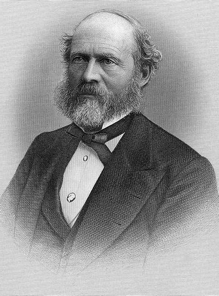

Определение циыилизации по К.Марксу

Льюис Генри Морган (1818–1881) – американский ученый, археолог и этнограф – в своем фундаментальном труде «Древнее общество, или Исследование линии человеческого прогресса от дикости через варварство к цивилизации» понимает под цивилизацией следующую за варварством ступень общественного развития. Предпосылкой цивилизации как естественного исторического результата развития первобытного общества Морган считал четыре основополагающих фактора: